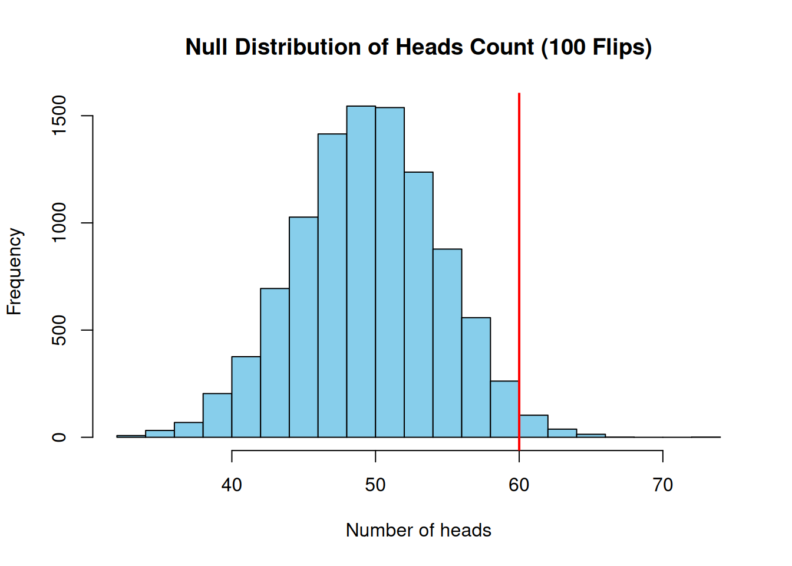

<!DOCTYPE html>
<html xmlns="http://www.w3.org/1999/xhtml" lang="en" xml:lang="en"><head>

<meta charset="utf-8">
<meta name="generator" content="quarto-1.4.550">

<meta name="viewport" content="width=device-width, initial-scale=1.0, user-scalable=yes">

<meta name="author" content="Martin Sjogard">
<meta name="dcterms.date" content="2025-06-20">
<meta name="keywords" content="Martin Sjogard, Martin Sjoegaard, clinical data scientist, neuroscience, Harvard, neuroimaging, biomarker discovery">
<meta name="description" content="Official website of Martin Sjogard (also known as Martin Sjoegaard), clinical data scientist and postdoctoral researcher in neuroimaging and data science.">

<title>Martin Sjogard - Permutation-Based FWER Correction, Part 1: Hypothesis Testing Fundamentals</title>
<style>
code{white-space: pre-wrap;}
span.smallcaps{font-variant: small-caps;}
div.columns{display: flex; gap: min(4vw, 1.5em);}
div.column{flex: auto; overflow-x: auto;}
div.hanging-indent{margin-left: 1.5em; text-indent: -1.5em;}
ul.task-list{list-style: none;}
ul.task-list li input[type="checkbox"] {
  width: 0.8em;
  margin: 0 0.8em 0.2em -1em; /* quarto-specific, see https://github.com/quarto-dev/quarto-cli/issues/4556 */ 
  vertical-align: middle;
}
/* CSS for syntax highlighting */
pre > code.sourceCode { white-space: pre; position: relative; }
pre > code.sourceCode > span { line-height: 1.25; }
pre > code.sourceCode > span:empty { height: 1.2em; }
.sourceCode { overflow: visible; }
code.sourceCode > span { color: inherit; text-decoration: inherit; }
div.sourceCode { margin: 1em 0; }
pre.sourceCode { margin: 0; }
@media screen {
div.sourceCode { overflow: auto; }
}
@media print {
pre > code.sourceCode { white-space: pre-wrap; }
pre > code.sourceCode > span { text-indent: -5em; padding-left: 5em; }
}
pre.numberSource code
  { counter-reset: source-line 0; }
pre.numberSource code > span
  { position: relative; left: -4em; counter-increment: source-line; }
pre.numberSource code > span > a:first-child::before
  { content: counter(source-line);
    position: relative; left: -1em; text-align: right; vertical-align: baseline;
    border: none; display: inline-block;
    -webkit-touch-callout: none; -webkit-user-select: none;
    -khtml-user-select: none; -moz-user-select: none;
    -ms-user-select: none; user-select: none;
    padding: 0 4px; width: 4em;
  }
pre.numberSource { margin-left: 3em;  padding-left: 4px; }
div.sourceCode
  {   }
@media screen {
pre > code.sourceCode > span > a:first-child::before { text-decoration: underline; }
}
</style>


<script src="../../site_libs/quarto-nav/quarto-nav.js"></script>
<script src="../../site_libs/quarto-nav/headroom.min.js"></script>
<script src="../../site_libs/clipboard/clipboard.min.js"></script>
<script src="../../site_libs/quarto-search/autocomplete.umd.js"></script>
<script src="../../site_libs/quarto-search/fuse.min.js"></script>
<script src="../../site_libs/quarto-search/quarto-search.js"></script>
<meta name="quarto:offset" content="../../">
<script src="../../site_libs/quarto-html/quarto.js"></script>
<script src="../../site_libs/quarto-html/popper.min.js"></script>
<script src="../../site_libs/quarto-html/tippy.umd.min.js"></script>
<script src="../../site_libs/quarto-html/anchor.min.js"></script>
<link href="../../site_libs/quarto-html/tippy.css" rel="stylesheet">
<link href="../../site_libs/quarto-html/quarto-syntax-highlighting.css" rel="stylesheet" id="quarto-text-highlighting-styles">
<script src="../../site_libs/bootstrap/bootstrap.min.js"></script>
<link href="../../site_libs/bootstrap/bootstrap-icons.css" rel="stylesheet">
<link href="../../site_libs/bootstrap/bootstrap.min.css" rel="stylesheet" id="quarto-bootstrap" data-mode="light">
<script id="quarto-search-options" type="application/json">{
  "location": "navbar",
  "copy-button": false,
  "collapse-after": 3,
  "panel-placement": "end",
  "type": "overlay",
  "limit": 50,
  "keyboard-shortcut": [
    "f",
    "/",
    "s"
  ],
  "show-item-context": false,
  "language": {
    "search-no-results-text": "No results",
    "search-matching-documents-text": "matching documents",
    "search-copy-link-title": "Copy link to search",
    "search-hide-matches-text": "Hide additional matches",
    "search-more-match-text": "more match in this document",
    "search-more-matches-text": "more matches in this document",
    "search-clear-button-title": "Clear",
    "search-text-placeholder": "",
    "search-detached-cancel-button-title": "Cancel",
    "search-submit-button-title": "Submit",
    "search-label": "Search"
  }
}</script>

  <script src="https://polyfill.io/v3/polyfill.min.js?features=es6"></script>
  <script src="https://cdn.jsdelivr.net/npm/mathjax@3/es5/tex-chtml-full.js" type="text/javascript"></script>

<script type="text/javascript">
const typesetMath = (el) => {
  if (window.MathJax) {
    // MathJax Typeset
    window.MathJax.typeset([el]);
  } else if (window.katex) {
    // KaTeX Render
    var mathElements = el.getElementsByClassName("math");
    var macros = [];
    for (var i = 0; i < mathElements.length; i++) {
      var texText = mathElements[i].firstChild;
      if (mathElements[i].tagName == "SPAN") {
        window.katex.render(texText.data, mathElements[i], {
          displayMode: mathElements[i].classList.contains('display'),
          throwOnError: false,
          macros: macros,
          fleqn: false
        });
      }
    }
  }
}
window.Quarto = {
  typesetMath
};
</script>

</head>

<body class="nav-fixed">

<div id="quarto-search-results"></div>
  <header id="quarto-header" class="headroom fixed-top">
    <nav class="navbar navbar-expand-lg " data-bs-theme="dark">
      <div class="navbar-container container-fluid">
      <div class="navbar-brand-container mx-auto">
    <a class="navbar-brand" href="../../index.html">
    <span class="navbar-title">Martin Sjogard</span>
    </a>
  </div>
            <div id="quarto-search" class="" title="Search"></div>
          <button class="navbar-toggler" type="button" data-bs-toggle="collapse" data-bs-target="#navbarCollapse" aria-controls="navbarCollapse" aria-expanded="false" aria-label="Toggle navigation" onclick="if (window.quartoToggleHeadroom) { window.quartoToggleHeadroom(); }">
  <span class="navbar-toggler-icon"></span>
</button>
          <div class="collapse navbar-collapse" id="navbarCollapse">
            <ul class="navbar-nav navbar-nav-scroll me-auto">
  <li class="nav-item">
    <a class="nav-link" href="../../index.html"> 
<span class="menu-text">Home</span></a>
  </li>  
  <li class="nav-item dropdown ">
    <a class="nav-link dropdown-toggle" href="#" id="nav-menu-posts" role="button" data-bs-toggle="dropdown" aria-expanded="false">
 <span class="menu-text">Posts</span>
    </a>
    <ul class="dropdown-menu" aria-labelledby="nav-menu-posts">    
        <li>
    <a class="dropdown-item" href="../../posts/power-analysis-lmm/index.html">
 <span class="dropdown-text">Power Analysis for LMMs</span></a>
  </li>  
    </ul>
  </li>
</ul>
            <ul class="navbar-nav navbar-nav-scroll ms-auto">
  <li class="nav-item">
    <a class="nav-link" href="../../about.qmd"> 
<span class="menu-text">About</span></a>
  </li>  
</ul>
          </div> <!-- /navcollapse -->
          <div class="quarto-navbar-tools">
</div>
      </div> <!-- /container-fluid -->
    </nav>
</header>
<!-- content -->
<div id="quarto-content" class="quarto-container page-columns page-rows-contents page-layout-article page-navbar">
<!-- sidebar -->
<!-- margin-sidebar -->
    <div id="quarto-margin-sidebar" class="sidebar margin-sidebar">
        <nav id="TOC" role="doc-toc" class="toc-active">
    <h2 id="toc-title">On this page</h2>
   
  <ul>
  <li><a href="#introduction" id="toc-introduction" class="nav-link active" data-scroll-target="#introduction">Introduction</a></li>
  <li><a href="#null-and-alternative-hypotheses" id="toc-null-and-alternative-hypotheses" class="nav-link" data-scroll-target="#null-and-alternative-hypotheses">Null and Alternative Hypotheses</a></li>
  <li><a href="#test-statistics-and-null-distributions" id="toc-test-statistics-and-null-distributions" class="nav-link" data-scroll-target="#test-statistics-and-null-distributions">Test Statistics and Null Distributions</a></li>
  <li><a href="#type-i-error-and-significance-level" id="toc-type-i-error-and-significance-level" class="nav-link" data-scroll-target="#type-i-error-and-significance-level">Type I Error and Significance Level</a></li>
  <li><a href="#interpreting-rejection-of-h_0" id="toc-interpreting-rejection-of-h_0" class="nav-link" data-scroll-target="#interpreting-rejection-of-h_0">Interpreting Rejection of <span class="math inline">\(H_0\)</span></a></li>
  <li><a href="#understanding-p-values" id="toc-understanding-p-values" class="nav-link" data-scroll-target="#understanding-p-values">Understanding p-Values</a></li>
  <li><a href="#r-example-testing-a-coin-for-fairness" id="toc-r-example-testing-a-coin-for-fairness" class="nav-link" data-scroll-target="#r-example-testing-a-coin-for-fairness">R Example: Testing a Coin for Fairness</a></li>
  <li><a href="#simulated-p-value-for-extreme-result" id="toc-simulated-p-value-for-extreme-result" class="nav-link" data-scroll-target="#simulated-p-value-for-extreme-result">Simulated p-Value for Extreme Result</a></li>
  <li><a href="#simulation-of-null-distribution" id="toc-simulation-of-null-distribution" class="nav-link" data-scroll-target="#simulation-of-null-distribution">Simulation of Null Distribution</a></li>
  <li><a href="#conclusion" id="toc-conclusion" class="nav-link" data-scroll-target="#conclusion">Conclusion</a></li>
  </ul>
</nav>
    </div>
<!-- main -->
<main class="content" id="quarto-document-content">

<header id="title-block-header" class="quarto-title-block default">
<div class="quarto-title">
<h1 class="title">Permutation-Based FWER Correction, Part 1: Hypothesis Testing Fundamentals</h1>
  <div class="quarto-categories">
    <div class="quarto-category">statistics</div>
    <div class="quarto-category">R</div>
    <div class="quarto-category">hypothesis testing</div>
    <div class="quarto-category">neuroscience</div>
  </div>
  </div>

<div>
  <div class="description">
    Official website of Martin Sjogard (also known as Martin Sjoegaard), clinical data scientist and postdoctoral researcher in neuroimaging and data science.
  </div>
</div>


<div class="quarto-title-meta">

    <div>
    <div class="quarto-title-meta-heading">Author</div>
    <div class="quarto-title-meta-contents">
             <p>Martin Sjogard </p>
          </div>
  </div>
    
    <div>
    <div class="quarto-title-meta-heading">Published</div>
    <div class="quarto-title-meta-contents">
      <p class="date">June 20, 2025</p>
    </div>
  </div>
  
    
  </div>
  

<div>
  <div class="keywords">
    <div class="block-title">Keywords</div>
    <p>Martin Sjogard, Martin Sjoegaard, clinical data scientist, neuroscience, Harvard, neuroimaging, biomarker discovery</p>
  </div>
</div>

</header>


<section id="introduction" class="level2">
<h2 class="anchored" data-anchor-id="introduction">Introduction</h2>
<p>In this blog series, we explore permutation-based family-wise error rate (FWER) correction. Before diving into permutation tests and error control, we lay the groundwork by covering core concepts in hypothesis testing: null and alternative hypotheses, test statistics, Type I errors, p-values, and significance testing — all illustrated with hands-on R code.</p>
<hr>
</section>
<section id="null-and-alternative-hypotheses" class="level2">
<h2 class="anchored" data-anchor-id="null-and-alternative-hypotheses">Null and Alternative Hypotheses</h2>
<p>A <strong>statistical hypothesis</strong> is a testable claim about a population or process. We typically test:</p>
<ul>
<li><span class="math inline">\(H_0\)</span>: The null hypothesis — no effect or no difference<br>
</li>
<li><span class="math inline">\(H_1\)</span>: The alternative hypothesis — a meaningful effect or difference</li>
</ul>
<p>Example: - <span class="math inline">\(H_0\)</span>: A drug does not affect blood pressure - <span class="math inline">\(H_1\)</span>: The drug does affect blood pressure</p>
<p>In neuroscience: - <span class="math inline">\(H_0\)</span>: No difference in brain activity between task and rest - <span class="math inline">\(H_1\)</span>: A significant difference exists</p>
<p>We assume <span class="math inline">\(H_0\)</span> is true and seek evidence to reject it in favor of <span class="math inline">\(H_1\)</span>.</p>
<hr>
</section>
<section id="test-statistics-and-null-distributions" class="level2">
<h2 class="anchored" data-anchor-id="test-statistics-and-null-distributions">Test Statistics and Null Distributions</h2>
<p>A <strong>test statistic</strong> is a numeric summary (e.g., a mean difference, <span class="math inline">\(t\)</span>-value, or count) used to compare data against <span class="math inline">\(H_0\)</span>.</p>
<p>The distribution of the test statistic assuming <span class="math inline">\(H_0\)</span> is true is called the <strong>null distribution</strong>. It provides a reference for assessing how “surprising” the observed statistic is under <span class="math inline">\(H_0\)</span>.</p>
<hr>
</section>
<section id="type-i-error-and-significance-level" class="level2">
<h2 class="anchored" data-anchor-id="type-i-error-and-significance-level">Type I Error and Significance Level</h2>
<p>There are two main types of errors:</p>
<ul>
<li><strong>Type I error</strong>: Rejecting <span class="math inline">\(H_0\)</span> when it’s true (false positive)<br>
</li>
<li><strong>Type II error</strong>: Failing to reject <span class="math inline">\(H_0\)</span> when <span class="math inline">\(H_1\)</span> is true (false negative)</li>
</ul>
<p>The <strong>significance level</strong> <span class="math inline">\(lpha\)</span> (often 0.05) is the acceptable probability of a Type I error.</p>
<hr>
</section>
<section id="interpreting-rejection-of-h_0" class="level2">
<h2 class="anchored" data-anchor-id="interpreting-rejection-of-h_0">Interpreting Rejection of <span class="math inline">\(H_0\)</span></h2>
<ul>
<li>Rejecting <span class="math inline">\(H_0\)</span>: Evidence supports <span class="math inline">\(H_1\)</span> (statistically significant)</li>
<li>Not rejecting <span class="math inline">\(H_0\)</span>: Data are consistent with <span class="math inline">\(H_0\)</span>; not enough evidence for <span class="math inline">\(H_1\)</span></li>
</ul>
<hr>
</section>
<section id="understanding-p-values" class="level2">
<h2 class="anchored" data-anchor-id="understanding-p-values">Understanding p-Values</h2>
<p>The <strong>p-value</strong> measures how surprising the observed data are under <span class="math inline">\(H_0\)</span>.</p>
<ul>
<li>Small p-value → evidence <strong>against</strong> <span class="math inline">\(H_0\)</span></li>
<li>Large p-value → data are typical under <span class="math inline">\(H_0\)</span></li>
</ul>
<blockquote class="blockquote">
<p>A p-value is <strong>not</strong> the probability that <span class="math inline">\(H_0\)</span> is true.</p>
</blockquote>
<hr>
</section>
<section id="r-example-testing-a-coin-for-fairness" class="level2">
<h2 class="anchored" data-anchor-id="r-example-testing-a-coin-for-fairness">R Example: Testing a Coin for Fairness</h2>
<p>We test whether a coin is fair using 20 flips.</p>
<div class="cell">
<div class="sourceCode cell-code" id="cb1"><pre class="sourceCode r code-with-copy"><code class="sourceCode r"><span id="cb1-1"><a href="#cb1-1" aria-hidden="true" tabindex="-1"></a><span class="fu">set.seed</span>(<span class="dv">42</span>)</span>
<span id="cb1-2"><a href="#cb1-2" aria-hidden="true" tabindex="-1"></a>n <span class="ot">&lt;-</span> <span class="dv">20</span></span>
<span id="cb1-3"><a href="#cb1-3" aria-hidden="true" tabindex="-1"></a>flips <span class="ot">&lt;-</span> <span class="fu">sample</span>(<span class="fu">c</span>(<span class="st">"H"</span>, <span class="st">"T"</span>), <span class="at">size =</span> n, <span class="at">replace =</span> <span class="cn">TRUE</span>, <span class="at">prob =</span> <span class="fu">c</span>(<span class="fl">0.5</span>, <span class="fl">0.5</span>))</span>
<span id="cb1-4"><a href="#cb1-4" aria-hidden="true" tabindex="-1"></a>num_heads <span class="ot">&lt;-</span> <span class="fu">sum</span>(flips <span class="sc">==</span> <span class="st">"H"</span>)</span>
<span id="cb1-5"><a href="#cb1-5" aria-hidden="true" tabindex="-1"></a>num_heads</span></code><button title="Copy to Clipboard" class="code-copy-button"><i class="bi"></i></button></pre></div>
<div class="cell-output cell-output-stdout">
<pre><code>[1] 13</code></pre>
</div>
<div class="sourceCode cell-code" id="cb3"><pre class="sourceCode r code-with-copy"><code class="sourceCode r"><span id="cb3-1"><a href="#cb3-1" aria-hidden="true" tabindex="-1"></a>test_result <span class="ot">&lt;-</span> <span class="fu">binom.test</span>(num_heads, n, <span class="at">p =</span> <span class="fl">0.5</span>, <span class="at">alternative =</span> <span class="st">"two.sided"</span>)</span>
<span id="cb3-2"><a href="#cb3-2" aria-hidden="true" tabindex="-1"></a>test_result</span></code><button title="Copy to Clipboard" class="code-copy-button"><i class="bi"></i></button></pre></div>
<div class="cell-output cell-output-stdout">
<pre><code>
    Exact binomial test

data:  num_heads and n
number of successes = 13, number of trials = 20, p-value = 0.2632
alternative hypothesis: true probability of success is not equal to 0.5
95 percent confidence interval:
 0.4078115 0.8460908
sample estimates:
probability of success 
                  0.65 </code></pre>
</div>
</div>
<p>Interpretation: - If p &gt; 0.05 → coin is plausibly fair<br>
- If p ≤ 0.05 → reject <span class="math inline">\(H_0\)</span>, suspect bias</p>
<hr>
</section>
<section id="simulated-p-value-for-extreme-result" class="level2">
<h2 class="anchored" data-anchor-id="simulated-p-value-for-extreme-result">Simulated p-Value for Extreme Result</h2>
<div class="cell">
<div class="sourceCode cell-code" id="cb5"><pre class="sourceCode r code-with-copy"><code class="sourceCode r"><span id="cb5-1"><a href="#cb5-1" aria-hidden="true" tabindex="-1"></a><span class="co"># Suppose we observed 17 heads out of 20</span></span>
<span id="cb5-2"><a href="#cb5-2" aria-hidden="true" tabindex="-1"></a>p_val <span class="ot">&lt;-</span> <span class="fu">sum</span>(<span class="fu">dbinom</span>(<span class="dv">17</span><span class="sc">:</span><span class="dv">20</span>, <span class="at">size =</span> <span class="dv">20</span>, <span class="at">prob =</span> <span class="fl">0.5</span>)) <span class="sc">*</span> <span class="dv">2</span>  <span class="co"># two-tailed</span></span>
<span id="cb5-3"><a href="#cb5-3" aria-hidden="true" tabindex="-1"></a>p_val</span></code><button title="Copy to Clipboard" class="code-copy-button"><i class="bi"></i></button></pre></div>
<div class="cell-output cell-output-stdout">
<pre><code>[1] 0.002576828</code></pre>
</div>
</div>
<hr>
</section>
<section id="simulation-of-null-distribution" class="level2">
<h2 class="anchored" data-anchor-id="simulation-of-null-distribution">Simulation of Null Distribution</h2>
<div class="cell">
<div class="sourceCode cell-code" id="cb7"><pre class="sourceCode r code-with-copy"><code class="sourceCode r"><span id="cb7-1"><a href="#cb7-1" aria-hidden="true" tabindex="-1"></a><span class="fu">set.seed</span>(<span class="dv">123</span>)</span>
<span id="cb7-2"><a href="#cb7-2" aria-hidden="true" tabindex="-1"></a>n <span class="ot">&lt;-</span> <span class="dv">100</span></span>
<span id="cb7-3"><a href="#cb7-3" aria-hidden="true" tabindex="-1"></a>p_null <span class="ot">&lt;-</span> <span class="fl">0.5</span></span>
<span id="cb7-4"><a href="#cb7-4" aria-hidden="true" tabindex="-1"></a>observed <span class="ot">&lt;-</span> <span class="dv">60</span></span>
<span id="cb7-5"><a href="#cb7-5" aria-hidden="true" tabindex="-1"></a></span>
<span id="cb7-6"><a href="#cb7-6" aria-hidden="true" tabindex="-1"></a><span class="co"># Analytical p-value</span></span>
<span id="cb7-7"><a href="#cb7-7" aria-hidden="true" tabindex="-1"></a>p_value_theory <span class="ot">&lt;-</span> <span class="dv">1</span> <span class="sc">-</span> <span class="fu">pbinom</span>(observed <span class="sc">-</span> <span class="dv">1</span>, <span class="at">size =</span> n, <span class="at">prob =</span> p_null)</span>
<span id="cb7-8"><a href="#cb7-8" aria-hidden="true" tabindex="-1"></a></span>
<span id="cb7-9"><a href="#cb7-9" aria-hidden="true" tabindex="-1"></a><span class="co"># Simulated null distribution</span></span>
<span id="cb7-10"><a href="#cb7-10" aria-hidden="true" tabindex="-1"></a>reps <span class="ot">&lt;-</span> <span class="dv">10000</span></span>
<span id="cb7-11"><a href="#cb7-11" aria-hidden="true" tabindex="-1"></a>sim_counts <span class="ot">&lt;-</span> <span class="fu">rbinom</span>(reps, <span class="at">size =</span> n, <span class="at">prob =</span> p_null)</span>
<span id="cb7-12"><a href="#cb7-12" aria-hidden="true" tabindex="-1"></a>p_value_sim <span class="ot">&lt;-</span> <span class="fu">mean</span>(sim_counts <span class="sc">&gt;=</span> observed)</span>
<span id="cb7-13"><a href="#cb7-13" aria-hidden="true" tabindex="-1"></a></span>
<span id="cb7-14"><a href="#cb7-14" aria-hidden="true" tabindex="-1"></a><span class="co"># Plot</span></span>
<span id="cb7-15"><a href="#cb7-15" aria-hidden="true" tabindex="-1"></a><span class="fu">hist</span>(sim_counts, <span class="at">breaks =</span> <span class="dv">20</span>, <span class="at">col =</span> <span class="st">"skyblue"</span>,</span>
<span id="cb7-16"><a href="#cb7-16" aria-hidden="true" tabindex="-1"></a>     <span class="at">main =</span> <span class="st">"Null Distribution of Heads Count (100 Flips)"</span>,</span>
<span id="cb7-17"><a href="#cb7-17" aria-hidden="true" tabindex="-1"></a>     <span class="at">xlab =</span> <span class="st">"Number of heads"</span>)</span>
<span id="cb7-18"><a href="#cb7-18" aria-hidden="true" tabindex="-1"></a><span class="fu">abline</span>(<span class="at">v =</span> observed, <span class="at">col =</span> <span class="st">"red"</span>, <span class="at">lwd =</span> <span class="dv">2</span>)</span></code><button title="Copy to Clipboard" class="code-copy-button"><i class="bi"></i></button></pre></div>
<div class="cell-output-display">
<div>
<figure class="figure">
<p></p>
</figure>
</div>
</div>
</div>
<hr>
</section>
<section id="conclusion" class="level2">
<h2 class="anchored" data-anchor-id="conclusion">Conclusion</h2>
<p>Understanding hypothesis testing, null distributions, and p-values lays the foundation for controlling false positives in multiple comparisons. In the next post, we’ll expand to full null distributions, simulation-based inference, and the rationale behind permutation testing.</p>
<p>Stay tuned for <strong>Part 2</strong>.</p>


</section>

</main> <!-- /main -->
<script id="quarto-html-after-body" type="application/javascript">
window.document.addEventListener("DOMContentLoaded", function (event) {
  const toggleBodyColorMode = (bsSheetEl) => {
    const mode = bsSheetEl.getAttribute("data-mode");
    const bodyEl = window.document.querySelector("body");
    if (mode === "dark") {
      bodyEl.classList.add("quarto-dark");
      bodyEl.classList.remove("quarto-light");
    } else {
      bodyEl.classList.add("quarto-light");
      bodyEl.classList.remove("quarto-dark");
    }
  }
  const toggleBodyColorPrimary = () => {
    const bsSheetEl = window.document.querySelector("link#quarto-bootstrap");
    if (bsSheetEl) {
      toggleBodyColorMode(bsSheetEl);
    }
  }
  toggleBodyColorPrimary();  
  const icon = "";
  const anchorJS = new window.AnchorJS();
  anchorJS.options = {
    placement: 'right',
    icon: icon
  };
  anchorJS.add('.anchored');
  const isCodeAnnotation = (el) => {
    for (const clz of el.classList) {
      if (clz.startsWith('code-annotation-')) {                     
        return true;
      }
    }
    return false;
  }
  const clipboard = new window.ClipboardJS('.code-copy-button', {
    text: function(trigger) {
      const codeEl = trigger.previousElementSibling.cloneNode(true);
      for (const childEl of codeEl.children) {
        if (isCodeAnnotation(childEl)) {
          childEl.remove();
        }
      }
      return codeEl.innerText;
    }
  });
  clipboard.on('success', function(e) {
    // button target
    const button = e.trigger;
    // don't keep focus
    button.blur();
    // flash "checked"
    button.classList.add('code-copy-button-checked');
    var currentTitle = button.getAttribute("title");
    button.setAttribute("title", "Copied!");
    let tooltip;
    if (window.bootstrap) {
      button.setAttribute("data-bs-toggle", "tooltip");
      button.setAttribute("data-bs-placement", "left");
      button.setAttribute("data-bs-title", "Copied!");
      tooltip = new bootstrap.Tooltip(button, 
        { trigger: "manual", 
          customClass: "code-copy-button-tooltip",
          offset: [0, -8]});
      tooltip.show();    
    }
    setTimeout(function() {
      if (tooltip) {
        tooltip.hide();
        button.removeAttribute("data-bs-title");
        button.removeAttribute("data-bs-toggle");
        button.removeAttribute("data-bs-placement");
      }
      button.setAttribute("title", currentTitle);
      button.classList.remove('code-copy-button-checked');
    }, 1000);
    // clear code selection
    e.clearSelection();
  });
  function tippyHover(el, contentFn, onTriggerFn, onUntriggerFn) {
    const config = {
      allowHTML: true,
      maxWidth: 500,
      delay: 100,
      arrow: false,
      appendTo: function(el) {
          return el.parentElement;
      },
      interactive: true,
      interactiveBorder: 10,
      theme: 'quarto',
      placement: 'bottom-start',
    };
    if (contentFn) {
      config.content = contentFn;
    }
    if (onTriggerFn) {
      config.onTrigger = onTriggerFn;
    }
    if (onUntriggerFn) {
      config.onUntrigger = onUntriggerFn;
    }
    window.tippy(el, config); 
  }
  const noterefs = window.document.querySelectorAll('a[role="doc-noteref"]');
  for (var i=0; i<noterefs.length; i++) {
    const ref = noterefs[i];
    tippyHover(ref, function() {
      // use id or data attribute instead here
      let href = ref.getAttribute('data-footnote-href') || ref.getAttribute('href');
      try { href = new URL(href).hash; } catch {}
      const id = href.replace(/^#\/?/, "");
      const note = window.document.getElementById(id);
      return note.innerHTML;
    });
  }
  const xrefs = window.document.querySelectorAll('a.quarto-xref');
  const processXRef = (id, note) => {
    // Strip column container classes
    const stripColumnClz = (el) => {
      el.classList.remove("page-full", "page-columns");
      if (el.children) {
        for (const child of el.children) {
          stripColumnClz(child);
        }
      }
    }
    stripColumnClz(note)
    if (id === null || id.startsWith('sec-')) {
      // Special case sections, only their first couple elements
      const container = document.createElement("div");
      if (note.children && note.children.length > 2) {
        container.appendChild(note.children[0].cloneNode(true));
        for (let i = 1; i < note.children.length; i++) {
          const child = note.children[i];
          if (child.tagName === "P" && child.innerText === "") {
            continue;
          } else {
            container.appendChild(child.cloneNode(true));
            break;
          }
        }
        if (window.Quarto?.typesetMath) {
          window.Quarto.typesetMath(container);
        }
        return container.innerHTML
      } else {
        if (window.Quarto?.typesetMath) {
          window.Quarto.typesetMath(note);
        }
        return note.innerHTML;
      }
    } else {
      // Remove any anchor links if they are present
      const anchorLink = note.querySelector('a.anchorjs-link');
      if (anchorLink) {
        anchorLink.remove();
      }
      if (window.Quarto?.typesetMath) {
        window.Quarto.typesetMath(note);
      }
      // TODO in 1.5, we should make sure this works without a callout special case
      if (note.classList.contains("callout")) {
        return note.outerHTML;
      } else {
        return note.innerHTML;
      }
    }
  }
  for (var i=0; i<xrefs.length; i++) {
    const xref = xrefs[i];
    tippyHover(xref, undefined, function(instance) {
      instance.disable();
      let url = xref.getAttribute('href');
      let hash = undefined; 
      if (url.startsWith('#')) {
        hash = url;
      } else {
        try { hash = new URL(url).hash; } catch {}
      }
      if (hash) {
        const id = hash.replace(/^#\/?/, "");
        const note = window.document.getElementById(id);
        if (note !== null) {
          try {
            const html = processXRef(id, note.cloneNode(true));
            instance.setContent(html);
          } finally {
            instance.enable();
            instance.show();
          }
        } else {
          // See if we can fetch this
          fetch(url.split('#')[0])
          .then(res => res.text())
          .then(html => {
            const parser = new DOMParser();
            const htmlDoc = parser.parseFromString(html, "text/html");
            const note = htmlDoc.getElementById(id);
            if (note !== null) {
              const html = processXRef(id, note);
              instance.setContent(html);
            } 
          }).finally(() => {
            instance.enable();
            instance.show();
          });
        }
      } else {
        // See if we can fetch a full url (with no hash to target)
        // This is a special case and we should probably do some content thinning / targeting
        fetch(url)
        .then(res => res.text())
        .then(html => {
          const parser = new DOMParser();
          const htmlDoc = parser.parseFromString(html, "text/html");
          const note = htmlDoc.querySelector('main.content');
          if (note !== null) {
            // This should only happen for chapter cross references
            // (since there is no id in the URL)
            // remove the first header
            if (note.children.length > 0 && note.children[0].tagName === "HEADER") {
              note.children[0].remove();
            }
            const html = processXRef(null, note);
            instance.setContent(html);
          } 
        }).finally(() => {
          instance.enable();
          instance.show();
        });
      }
    }, function(instance) {
    });
  }
      let selectedAnnoteEl;
      const selectorForAnnotation = ( cell, annotation) => {
        let cellAttr = 'data-code-cell="' + cell + '"';
        let lineAttr = 'data-code-annotation="' +  annotation + '"';
        const selector = 'span[' + cellAttr + '][' + lineAttr + ']';
        return selector;
      }
      const selectCodeLines = (annoteEl) => {
        const doc = window.document;
        const targetCell = annoteEl.getAttribute("data-target-cell");
        const targetAnnotation = annoteEl.getAttribute("data-target-annotation");
        const annoteSpan = window.document.querySelector(selectorForAnnotation(targetCell, targetAnnotation));
        const lines = annoteSpan.getAttribute("data-code-lines").split(",");
        const lineIds = lines.map((line) => {
          return targetCell + "-" + line;
        })
        let top = null;
        let height = null;
        let parent = null;
        if (lineIds.length > 0) {
            //compute the position of the single el (top and bottom and make a div)
            const el = window.document.getElementById(lineIds[0]);
            top = el.offsetTop;
            height = el.offsetHeight;
            parent = el.parentElement.parentElement;
          if (lineIds.length > 1) {
            const lastEl = window.document.getElementById(lineIds[lineIds.length - 1]);
            const bottom = lastEl.offsetTop + lastEl.offsetHeight;
            height = bottom - top;
          }
          if (top !== null && height !== null && parent !== null) {
            // cook up a div (if necessary) and position it 
            let div = window.document.getElementById("code-annotation-line-highlight");
            if (div === null) {
              div = window.document.createElement("div");
              div.setAttribute("id", "code-annotation-line-highlight");
              div.style.position = 'absolute';
              parent.appendChild(div);
            }
            div.style.top = top - 2 + "px";
            div.style.height = height + 4 + "px";
            div.style.left = 0;
            let gutterDiv = window.document.getElementById("code-annotation-line-highlight-gutter");
            if (gutterDiv === null) {
              gutterDiv = window.document.createElement("div");
              gutterDiv.setAttribute("id", "code-annotation-line-highlight-gutter");
              gutterDiv.style.position = 'absolute';
              const codeCell = window.document.getElementById(targetCell);
              const gutter = codeCell.querySelector('.code-annotation-gutter');
              gutter.appendChild(gutterDiv);
            }
            gutterDiv.style.top = top - 2 + "px";
            gutterDiv.style.height = height + 4 + "px";
          }
          selectedAnnoteEl = annoteEl;
        }
      };
      const unselectCodeLines = () => {
        const elementsIds = ["code-annotation-line-highlight", "code-annotation-line-highlight-gutter"];
        elementsIds.forEach((elId) => {
          const div = window.document.getElementById(elId);
          if (div) {
            div.remove();
          }
        });
        selectedAnnoteEl = undefined;
      };
        // Handle positioning of the toggle
    window.addEventListener(
      "resize",
      throttle(() => {
        elRect = undefined;
        if (selectedAnnoteEl) {
          selectCodeLines(selectedAnnoteEl);
        }
      }, 10)
    );
    function throttle(fn, ms) {
    let throttle = false;
    let timer;
      return (...args) => {
        if(!throttle) { // first call gets through
            fn.apply(this, args);
            throttle = true;
        } else { // all the others get throttled
            if(timer) clearTimeout(timer); // cancel #2
            timer = setTimeout(() => {
              fn.apply(this, args);
              timer = throttle = false;
            }, ms);
        }
      };
    }
      // Attach click handler to the DT
      const annoteDls = window.document.querySelectorAll('dt[data-target-cell]');
      for (const annoteDlNode of annoteDls) {
        annoteDlNode.addEventListener('click', (event) => {
          const clickedEl = event.target;
          if (clickedEl !== selectedAnnoteEl) {
            unselectCodeLines();
            const activeEl = window.document.querySelector('dt[data-target-cell].code-annotation-active');
            if (activeEl) {
              activeEl.classList.remove('code-annotation-active');
            }
            selectCodeLines(clickedEl);
            clickedEl.classList.add('code-annotation-active');
          } else {
            // Unselect the line
            unselectCodeLines();
            clickedEl.classList.remove('code-annotation-active');
          }
        });
      }
  const findCites = (el) => {
    const parentEl = el.parentElement;
    if (parentEl) {
      const cites = parentEl.dataset.cites;
      if (cites) {
        return {
          el,
          cites: cites.split(' ')
        };
      } else {
        return findCites(el.parentElement)
      }
    } else {
      return undefined;
    }
  };
  var bibliorefs = window.document.querySelectorAll('a[role="doc-biblioref"]');
  for (var i=0; i<bibliorefs.length; i++) {
    const ref = bibliorefs[i];
    const citeInfo = findCites(ref);
    if (citeInfo) {
      tippyHover(citeInfo.el, function() {
        var popup = window.document.createElement('div');
        citeInfo.cites.forEach(function(cite) {
          var citeDiv = window.document.createElement('div');
          citeDiv.classList.add('hanging-indent');
          citeDiv.classList.add('csl-entry');
          var biblioDiv = window.document.getElementById('ref-' + cite);
          if (biblioDiv) {
            citeDiv.innerHTML = biblioDiv.innerHTML;
          }
          popup.appendChild(citeDiv);
        });
        return popup.innerHTML;
      });
    }
  }
});
</script>
</div> <!-- /content -->


</body></html>